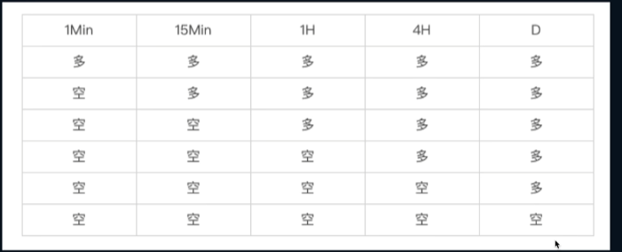

股票-通达信版本
股票通达信
包含工具使用、股票基本知识、常用指数规则、趋势线
股票基本知识
- 5档买卖盘
- 集合竞价规则
- k线图形态
- 公式意义
- 分红和加权
工具的使用
快捷键：
| 功能 | 快捷键 |
|---|---|
| alt+f12 | 画线 |
| ctrl+R | 所属板块 |
| ctrl+y | 修改量价条件 |
| alt+z | 添加自选 |
| F8 | 分时图 \闪电图 |
| F1 | 帮助 |
| F3 | 上证指数 |
| F4 | 分析图 |
| F5 | K线 |
| F6 | 自选 |
| F7 | 功能 |
| F8 | 切换周期 |
| F9 | 交易 |
| F10 | 经营数据财务报表 |
| Ctrl+M | 多图展示 |
| ctrl+insert | 可以添加 多指标对比 |
| 键盘精灵 | |
| 67 | 涨幅榜 |
市场理解
- 价格传导的规律，小周期到大周期

需要定义在哪个周期上定义– 交易转向速度，越快速的转向越不稳定，但是也意味着一旦正确，将会获取更多利润空间
趋势线 ，只是代表市场趋势斜率发生了变化 ，市场经常会设置此类陷阱，诱导交易，所以需要等价格创新低后交易。空头趋势走坏了，并不代表多头趋势开启。破了趋势以后最好创新低后在介入
更高的高点 和 更高的低点 不一定是上升，更低的低点 和更低的高点也不定时下降，背后时动能强弱和连续性
价格是人们购买股票意愿的体现
交易讲证据，客观存在的东西，分析可能性和判断，不去编故事
常见做法
- 通过涨幅发现启动票2个点，大量买入，获取平均收益，除非第二天涨停，否则卖出
- 集合竞价 低价或者评价偏多，当日大概率会下跌，可以考虑做T
- 总市值100-200亿中间 分红不分配 看研究报告 户均流通股在增加 上市公司董事、监事、高级管理人员及相关人员持有本公司股份变动情况：
如何画趋势线
- 支持、阻力的本质作用是体现市场共识，很多人也会画同样的线。纠结画在实体或者引线上是没意义的，重要是尽可能触碰更多K线。 另外尽量不要穿过实体
- 支持阻力线只有相对有效
- 阻力线作为卖点判断很合适
股票-通达信版本
https://godbuttton.github.io/2023/04/26/股票-通达信版本/